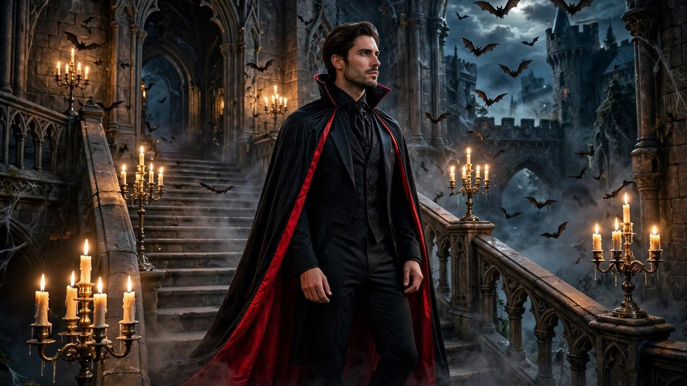

Vampire Halloween Costume Ideas 2026: Elegant to Terrifying
Published October 17, 2026 · Updated October 17, 2026 · By EventBuzz Team · 4 min read

Few costumes carry like the vampire: centuries of style, instant recognition, and a range from ballroom-elegant to genuinely frightening. In 2026, vampire costumes split into two glorious camps — the aristocrat and the monster — and both are winners.
This guide covers vampire Halloween costume ideas for every approach: elegant, scary, modern, and couples.
Elegant Vampire Looks
- Classic Dracula: black cape with red lining, medallion, slicked hair. The tuxedo of Halloween costumes.
- Victorian vampire: high collar, brocade vest, pocket watch. Aristocratic menace.
- Vampire bride: tattered white gown, dark veil, fangs. Gothic romance.
- Modern vampire: sharp black suit, subtle fangs, red-tinted contacts. Boardroom by day, coffin by night.
- Carmilla: the original literary vampire — dark romantic gown, commanding presence.
Scary Vampire Looks
- Feral vampire: torn clothes, wild hair, bloodied mouth, yellow contacts. The 30 Days of Night approach.
- Nosferatu: bald cap, pointed ears, long claws. A century old and still the scariest.
- Freshly-turned victim: normal clothes, bite marks, blood trickle — the horror is in the detail.
- Vampire bat hybrid: dark wings, furry textures, fangs. Creature-feature fun.
Vampire Makeup Essentials
Pale base: go two shades lighter than your skin, then contour sharply — vampires have cheekbones.
Eyes: dark, smoky, slightly red around the rims. Red or black contacts transform the look (get fitted ones, never share).
Blood: a thin trickle from the mouth corner beats a face full. Apply with a stipple sponge for realism. Our SFX beginner guide covers blood effects step by step.
Fangs: custom-fit caps beat cheap plastic. Whiten teeth first — contrast sells the bite.
Couples & Group Vampire Themes
- Dracula and Mina: the classic pair — him in cape, her in Victorian gown.
- Vampire coven: a group in black with matching red accents. Simple, striking, powerful.
- Vampires through history: each friend picks an era — Victorian, 20s, 80s, modern.
- Vampire hunter + vampire: the playful chase dynamic. Stake optional.
Frequently Asked Questions
How do I make vampire fangs stay in?
Custom-fit thermoplastic fangs (moulded in hot water) stay far better than one-size plastic. Fit them a day before so you are comfortable.
What is the difference between elegant and scary vampire costumes?
Elegant vampires emphasise tailoring, capes, and subtle makeup; scary vampires use torn clothing, wild hair, blood effects, and creature contacts. Choose based on the party vibe.
Are vampire costumes good for couples?
Among the best — Dracula/Mina, vampire/vampire-hunter, and matching coven looks are all classics.
Can I wear a vampire costume with glasses?
Yes — a Victorian vampire with round spectacles looks distinguished. Or switch to contacts for the night and let the eyes do the work.
Conclusion
Elegant or feral, the vampire endures because it lets you be powerful, mysterious, and impeccably dressed. Choose your era, bare those fangs, and have a bloody good Halloween 2026.
Sharpen the look with our SFX makeup and costume guides.
Share this guide with friends and family — and have a fantastic Halloween 2026.
Vampire Costume Picks
Capes, fangs and finishing touches.


Links take you to Temu, where shipping and delivery details are shown. Prices can change.